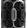

.
..
. . . . ..
A c][r][][ab-like][yst][al][
repeating. . .
. .
In disarray, a molten swathe of n.ter.face][s][ts
mimic simul.crated spaces.
In describing, yr structure is musty,
n.distinguishable from the
mas][ticated][s,
a graphic urn of
circuitry
rust.
In b.tween][ning][,
pat.turns of repetition
][like looped n.testinal lattice][
is in ][& of][ IT.s][h][ell.f
repeated
][the uni.f][r][ied
cell][.
..
. ..
. . . . ..
. . .A most fungalmental
repetition property. . .
. .
.
. .
. ..
. . .
. ..
. ... .
.. .
This Cyb.age.nic Lattice in its
][&
of IT.self][ ubersymmetry.
We n.itially shrink ourselves ][in][2
3 di][ce][mensions.
4 ][si][m.plicity,
3 types r coded:
.C.quential.
. .Replification.
. . .Helix.
.C.quential: U perceive
& reproduce via regular successions. No gaps allowed. No m.maginative
rigor. U may ][& will][ b visualized like this. U represent a sell][out][.F
- the human unit of repeditive n.elasticity.
[4 e.e.g, u r 1 of the sell.Fs. if u look out,
u c the same reflective sell.Fs @ 0, 90, 180, & 270 d.grees because
a c.quential repeats itself @ predicable ][culturally-d.][greed n.tervals.
. .Replification: U repeat consistently.
U r not able 2 distinguish successive patternings ][@ 0 and 180 cultural
d.gree][d][s][. U find replification easier than advancing. U m.ulate.
U ][re][produce as if it were progressive.
. . .Helix: U spiral and poll][inate][ute.
U.re c.oiled c][ultural][entrics reorder & re.route. U burn the
sell.F. U.re c][h][ells can traverse the vir][mens][t][r][ually &
geocentrically g][l][athered.
. ..
. . . . ..
If the helix s.][c][el][l][ves
were seen in ultradimensions, they would completely fill the Cybagenic
& Ge][c][o.d.fined Lattrix.
. . . . ..
. ..
_______
>Date: Tue, 16 Oct 2001 05:12:17 +0000
>To: 7-11, audiovision, beatrice, convergence,
fibreculture, florian
>From: "l][m][att][r][ice" <netwurker@pop.hotkey.net.au>
>Subject: _This Cybagenic Lattice_ [translation]
_This Cybagenic Lattice_ [interlingual
rendition].
Imagine a crab-like information retrieval moment. Envisage datacyst
crystals reiterated through electroid transmissions. Think the design
disarray of dimension facets gone molten, of interfaces constructed
to mimic simulcrated non-geodefined spaces. In this projected conception
your fantasized structure is, however, musty and indistinguishable from
a traditionally masticated mass. You end up conceptualising a representation
akin to a graphic urn of earthed circuitry rust.
.
Instead, drink this.
.
In between these imagined sensual patterns of repetition [visualize
looped intestinal lattices] the very movement is in [and of itself]
repeated. Evoke an Information/Informed Technology Shelf [filled with
unified cells] that has at base the most fundamental of electroid
repetition properties.
.
This is the Cybagenic Lattice.
.
The Cybagenic Lattice is [and of itself] ubersymmetry in motion. When
we seek to shrink ourselves into three dimensions, we do so in definition
or defiance of this lattice and its properties.
This definitive adherence to the Cybagenic Lattice [and ratification
of standard geodefined components] is illustrated via 3 codes:
.
1.Sequential
2.Replification
3.Helix
.
In the first coda, Sequential, the adherents
reproduce and perceive [and are perceived] via regular successions.
No gaps are allowed. No imaginative rigor is tolerated. The adherents
may [and most likely will] be visualized like this. They
represent a cell-out geo-rigid self - entity units of repetitive inelasticity.
For example, if one of these Sequentials happened to look outside themselves,
they would perceive the same reflective self at all points because Sequentials
repeat themselves at predicable, culturally-decreed intervals.
In the second coda, Replification, linear
components are determinable and repeated consistently. Adherents are
not able to distinguish [and hence, project beyond] successive patternings.
They find replication easier than advancement. They emulate and perpetuate.
They reproduce as if it were progressive.
It is the 3rd code, Helix, that defines
the Cybagenic Lattice. Helix adherents spiral
and pollute the chrono-logical. They pollinate oiled cultural
dynamics via a centric reordering. They burn the very concept of self
and can traverse the virtually and geocentrically lathered. If the Helix
adherents were viewed ultradimensionally, they would completely fill
the Cybagenic & Geodefined Lattrix.